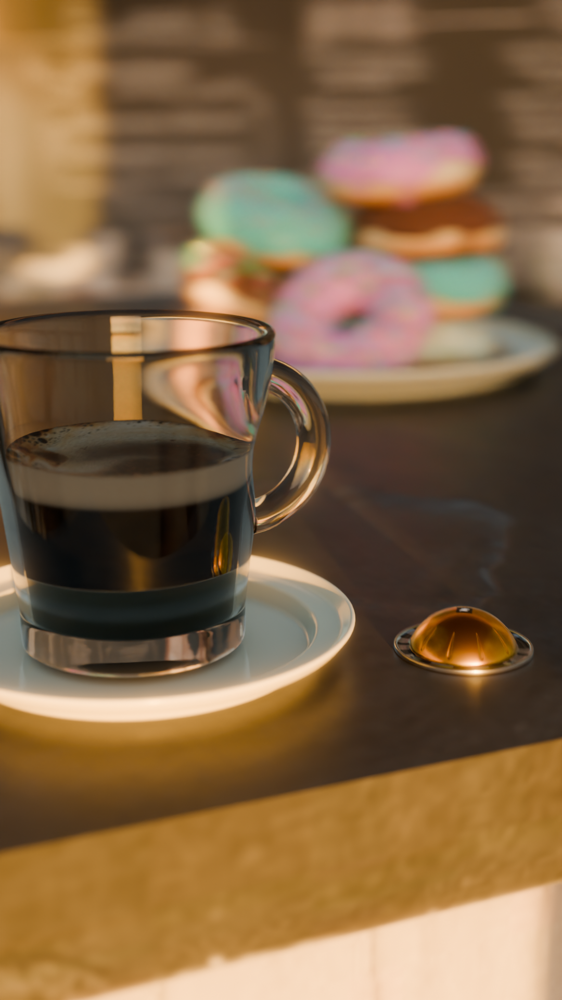
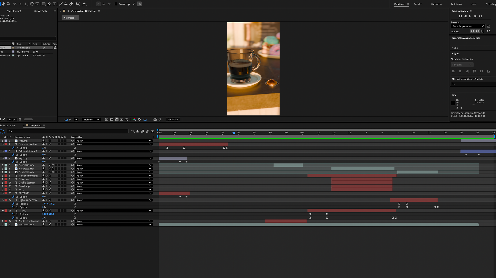

Le travail a consisté autant à modéliser fidèlement les capsules qu’à imaginer un
fil narratif court et impactant, permettant de mettre en avant l’ensemble des atouts
de la gamme : variété de tailles, richesse des goûts et qualité du café.
L’animation illustre ainsi que la gamme Vertuo a le potentiel de séduire tous les amateurs de café.



J’ai choisi un montage rythmé et des plans dynamiques afin de capter l’attention
d’un public jeune et connecté, tout en conservant l’identité élégante et jazzy propre
à la marque. Cette ambiance se traduit par une direction artistique épurée, une
typographie simple, des couleurs chaleureuses et une bande sonore raffinée.
